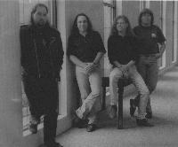

Home Artist links Label link

Glass Hammer - On To Evermore
| Artist: | Glass Hammer |
| Title: | On To Evermore |
| Label: | Sound Resources SR1127 |
| Length(s): | 63 minutes |
| Year(s) of release: | 1998 |
| Month of review: | 03/1998 |
Line up
Fred Schendel - lead and backing vocals, keyboards, guitars, sitar, mandolin, flute, drums
Steve Babb - lead and backing vocals, keyboards, bass, percussion
Walter Moore - lead and backing vocals, guitars, drums
David Carter - backing vocals, guitar
and help from Bob Stagner, Tracy Cloud, Kristy Sink, Tony Smith and Tatyana
Tracks
| 1) | On To Evermore | 7.00
|
| 2) | The Mayor Of Longview | 5.26
|
| 3) | The Conflict | 5.45
|
| 4) | Muse | 1.06
|
| 5) | Arianna | 16.41
|
| 6) | Only Red | 5.18
|
| 7) | This Fading Age | 5.13
|
| 8) | Junkyard Angel | 8.58
|
| 9) | Twilight On Longview | 5.47
|
| 10) | ?? | 1.23 (bonustrack)
|
Summary
With a number albums behind this is in fact my very first encounter
with this American band. Tracy Cloud singing on this album also has a solo
album out.
The music
This concept album is about Anna, the sculptor, the mayor of Longview, Lliusion
(obviously Illusion) and seems to be very much in the line of Goethe's Faust,
but with a different ring to it.
The opener is also the title track. In seven minutes we encounter a number
of themes, the singing is often in harmony and as a whole this is a very
nice track with prominent keys, good singing and echoes of Camel (in their
softer tracks) and Genesis. After the cuckoo opening of The Mayor Of Longview,
the song turns out to be quite a bouncy track, too commercial and monotonous
for my tastes and comparable to Single Factor Camel with some wailing cats and
ELP keys thrown in for good measure. Some nice guitarwork though.
The music for me can be compared to Maryson, a comparable atmosphere, a bit
on the soft side and also a strong story-like approach to the music.
The next track The Conflict opens with ELP keys, the vocal part is very
catchy, but in this case the outcome is a lot better than the previous
track. The singing is very good on this track and for the proggers it contains
some complex intermezzo and a speed-up towards the end, coming close to
melodic hardrock. One might liken this track to Ayreon.
After the short Muse we come to the epic of the album, Arianna. Opening with
piano, this song is alive with washes of keys, soft vocal parts reminding me
of Toto, harder edges passages with menacing vocals, great melodies,
and again an ELPish keyboard solo. After Arianna has come to life we get a
rather sad, classical intermezzo after which the music picks up again,
Arianna declares she's her own woman now and will depart into the
world. The music reaches an emotional climax here, with desperate singing
and bombastic music. After this the beautiful vocal part (the Toto) of the
beginning returns, majestic, complete with church organ.
Vocally and it seems also musically, the next track opens in the Toto
style, but the chorus is sung in a more Kansas styled way. The middle part
is quite groovy with heavy guitars and a prominent bass. This Fading Age
is a rather frolic, folky tune with acoustic guitar and a rather friendly
atmosphere. The melodies are quite good and vocally some nice things are done
here. The easy vocals of Toto return in Junkyard Angel. Besides the general
variety of vocals, to be found in most tracks, this song also features some
very heavy guitars and the already mentioned ELP keyboards.
After the return of Arianna in the previous song, the albums winds slowly
down in the spacy instrumental Twilight On Longview. At first doesn't seem to
be a very worthwhile track, a bit too easygoing, but the flute playing is quite
nice. The bonus track contains some sound stuff like wind, birds and
the theme of the title track returns, softly.
A last remark: the artwork, by Carl Lundgren, is great, a haughty angel,
superbly drawn.
Conclusion
A very nice album with very good vocals and often very good melodies. The only
bad apple is The Mayor Of Longview which I really don't like.
The music contains echoes of Toto, Kansas (in the vocals and vocal melodies),
ELP (the keys, that sometimes sound a bit dated) and in atmosphere mostly
later Camel. The music can be sad, soft, folky, frolic, aggressive, loud and
hard-edged, but always the melody is kept in sight and generally the melodies
are very appealing. An album for those that
are into accessible but compelling, melodic progressive rock and who enjoy a
softer, call it sensuous?, side to it, with the occasional climactic outburst.
© Jurriaan Hage